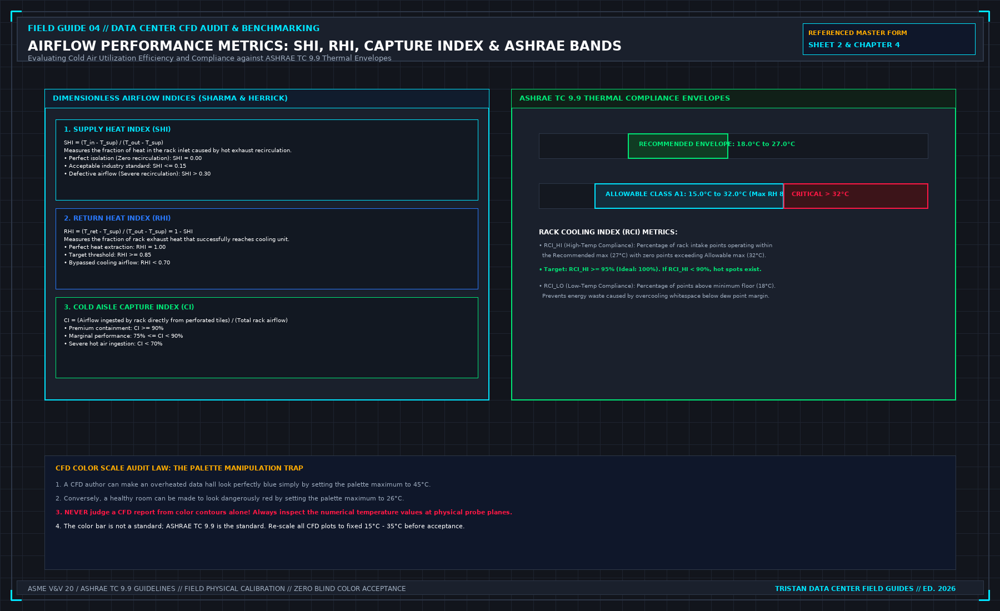

An empty U without a blank is a bypass
Direct Answer Block: The orifice aerodynamics of unblanked 1U server slots: how missing blanking panels create internal rack recirculation loops and inflate Supply Heat Index (SHI). In mission-critical data center commissioning and operations, engineers enforce this boundary using deterministic physical equations, calibrated field instrumentation, and auditable sign-off gates rather than relying on vendor brochure summaries, uncalibrated software plots, or verbal assurances. Every measurement and state transition must be recorded with synchronized UTC timestamps and explicit pass/fail thresholds before a signature is granted.

Cold air does not care that a cabinet was specified with blanking panels. It cares whether the opening is closed. An empty unit space is a hole from the cold side to the hot side, or the reverse, depending on how the row is fed. The equipment that is installed then sees a mix. A room that looks full from the aisle can still be bypassing through the gaps you did not walk.
The check is a walk, not a model. Every empty U is either blanked or written down as open. A blank that does not meet the rails, or that leaves a slot around a cable, is not closed. Write the function: empty U, cable cutout, gap beside a chassis. Do not write a brand. A panel from a catalog is not evidence. The fit on this cabinet is the evidence.
Do not call the row optimized because most cabinets were done. The one open U is the path the air will use. "Mostly blanked" is the word minor, applied to a hole. It does not get a pass sentence.
A temperature map that shows a comfortable room average does not clear the open U. The average is not the inlet at that cabinet. If the claim is the equipment, look at the face, then look at the holes in the face. The picture can wait.
This walk is not a substitute for judging a CFD report. It is what you do before you let the report say the air is organized. If the blanks are missing, the report is a picture of a different hall, or of a hall you have not built.
From the field-guide series, Tristan, Data Center Field Guides. The picture-versus-measurement half is Judge a Data Hall CFD.
1. First-Principles Engineering Formulation and Governing Mathematics
In high-density data center environments, verbal summaries and qualitative status tiles routinely obscure incipient physical failures. Whether auditing a 120 kW liquid-cooled rack boundary, evaluating a 1-second telemetry time series, or verifying plant redundancy prior to handover, the governing physical relationship for this protocol is expressed as:
When any term on the left-hand or right-hand side of this relationship is left unmeasured, inferred from an uncalibrated nameplate, or averaged across an unverified time window, the resulting engineering record cannot support a valid operational signature. Field engineers must verify each physical variable independently using NIST/ISO 17025 traceable instruments before proceeding to the next gate in the sequence.
| Audit Verification Parameter | Unacceptable / Defective Field Practice | Auditable First-Principles Requirement | Mandatory Action on Failure |
|---|---|---|---|
| Primary Boundary Definition | Implied by vendor brochure or slide deck | Explicitly bounded on stamped P&ID / SLD with tag IDs | Halt acceptance; issue formal boundary clarification |
| Measurement & Telemetry Proof | Single uncalibrated display reading or 60-sec average | Calibrated Class A/0.5S sensor with 1-sec UTC timestamp | Reject dataset; classify point as 0x40 Stale or 0x80 Bad |
| Pass / Fail Acceptance Gate | Qualitative "Looks OK" or "Within Normal Range" | Quantitative numerical corridor cited from revision in force | Log Category A/B defect; withhold retainage or permit |
| Custody & Sign-Off Record | Single bundled "Accepted" signature at end of meeting | Scoped, dated sentence naming exact proved & unproved lines | Strike unsupported claims; issue Conditional Refusal |
2. Deep-Dive Technical Protocol and Field Implementation
The following field protocol—adapted directly from Volume 04: Judge a CFD Model for Data Centers—establishes the step-by-step verification mechanics required on the data hall floor:
A computational fluid dynamics report is contractually permitted to support exactly one decision. State that decision on the cover before reviewing the simulation plots.
In mission-critical data center engineering, four distinct decision domains are legitimate. Using a report commissioned for one domain to justify decisions in another—or attempting to address multiple domains simultaneously—inevitably leads to misapplied engineering and flawed capital expenditures.
The Four Permitted Decision Domains
1. Pre-Construction Design Comparison
- Permitted Scope: Comparing Layout Option A against Layout Option B before any physical construction begins (for example, comparing an 800 mm raised-floor plenum against a flooded-aisle flat slab, or evaluating hot aisle containment versus cold aisle containment).
- Authorized Finding: The report may conclude: "Option A achieves 3.8 K lower peak rack intake temperatures and a 12% higher Cold Aisle Capture Index than Option B under identical boundary conditions."
- Boundary Restriction: The report cannot state that Option A meets as-built contract specifications. Nothing has been built. This use requires zero physical field measurements; its validity depends entirely on ensuring that both options were discretized with identical mesh density and executed under identical solver convergence criteria.
2. Built-Hall Compliance Audit
- Permitted Scope: Verifying that a completed, physical data hall satisfies contract airflow and thermal specifications prior to IT hardware deployment.
- Authorized Finding: The report may conclude: "The calibrated model demonstrates that with all designated cooling units active at nominal setpoints, 100% of server intake planes operate within the ASHRAE Recommended A1 thermal envelope."
- Boundary Restriction: This use requires the multi-point physical field measurements from Chapter 1 and the statistical validation audit (MAE ≤ 1.0 K) from Chapter 2. Without physical benchmarking, a built-hall compliance report is merely a pre-construction design model that arrived late.
3. Operational Hotspot Root-Cause Analysis
- Permitted Scope: Diagnosing the physical cause of localized overheating in an operating data hall, and evaluating proposed physical remediation measures.
- Authorized Finding: The report may conclude: "The 31.5°C intake hotspot at Rack 18 is caused by severe underfloor plenum jet entrainment depleting static pressure to -2.5 Pa at Tile 07. Simulating the addition of underfloor air baffles restores plenum pressure to +14.0 Pa and reduces peak intake temperature to 23.2°C."
- Boundary Restriction: The identified root cause must correspond to a physical input you can touch in the room. Furthermore, a proposed remediation is not a verified conclusion until the consultant executes a formal rerun script demonstrating that the modification eliminates the hotspot without creating secondary deficits elsewhere in the hall.
4. N-1 Emergency Failure Ride-Through
- Permitted Scope: Evaluating airflow redistribution, intake temperature excursions, and thermal runaway timelines following the sudden loss of an active CRAH unit or chiller feed.
- Authorized Finding: The report may conclude: "Upon the simulated trip of CRAH-02, cold aisle static pressure decays within 4.5 seconds, and Rack 09 intake temperature breaches the ASHRAE Allowable threshold of 32.0°C after 8.5 minutes of continued operation."
- Boundary Restriction: This application requires transient, time-accurate numerical solving (dt ≤ 1.0 s). A steady-state simulation cannot narrate a timeline; evaluating thermal ride-through using a steady-state run falsely assumes that fluid velocities and thermal plumes transition instantaneously without thermal inertia.
Dimensionless Airflow Performance Indices
A rigorous CFD report moves beyond simple temperature plots to evaluate objective, dimensionless airflow performance indices:
1. Supply Heat Index (SHI) and Return Heat Index (RHI)
Developed by Sharma and Herrick, these indices quantify the degree of thermal contamination across the whitespace:
Where:
- T_in is the rack intake temperature.
- T_supply is cooling unit discharge temperature.
- T_exhaust is server rear discharge temperature.
- T_return is cooling unit return grille temperature.
Acceptance Standard:
- SHI = 0.00 represents perfect containment (zero recirculation of hot exhaust air into the intake stream).
- Industry standard for modern contained data centers is SHI ≤ 0.15.
- An SHI > 0.30 indicates defective aisle containment, severe blanking panel leakage, or gross airflow deficits.
2. Cold Aisle Capture Index (CI)
Quantifies the percentage of air ingested by a server intake that originates directly from local perforated tiles or supply grilles, rather than recirculated room air:
Acceptance Standard:
- High-Performance Containment: CI ≥ 90%.
- Marginal Aisle: 75% ≤ CI < 90%.
- Severe Ingestion Deficit: CI < 70% (indicates cold aisle starvation where server fans pull hot exhaust air from the room).
Compliance against ASHRAE TC 9.9 Thermal Envelopes
The performance of server intakes must be audited directly against the governing ASHRAE TC 9.9 Thermal Guidelines for Data Processing Environments (Class A1 envelope):
ASHRAE CLASS A1 THERMAL ENVELOPE AUDIT
| ENVIRONMENTAL PARAMETER | RECOMMENDED ENVELOPE | ALLOWABLE ENVELOPE | AUDIT VIOLATION LIMIT |
|---|---|---|---|
| Dry-Bulb Temperature Dew Point Temperature Maximum Relative Humidity | 18.0°C to 27.0°C 5.5°C to 15.0°C 60% RH | 15.0°C to 32.0°C -12.0°C to 17.0°C 80% RH | > 32.0°C or < 15.0°C > 17.0°C (Condensation) > 80% RH |
The Rack Cooling Index (RCI)
To summarize row-wide compliance mathematically, the report should compute the Rack Cooling Index:
- RCI_HI (High-Temperature Compliance): Measures the percentage of intake points operating within the Recommended maximum (27.0°C) without any points breaching the Allowable ceiling (32.0°C). Target: RCI_HI ≥ 95% (Ideal: 100%).
- RCI_LO (Low-Temperature Compliance): Measures protection against overcooling below the minimum floor (18.0°C). Target: RCI_LO ≥ 95%.
The Palette Manipulation Trap
The primary mechanism of visual deception in CFD reporting is the arbitrary manipulation of the temperature color contour scale:
- A modeler who wishes to present a dangerously overheated room as healthy can simply adjust the palette upper bound to 45.0°C. On that scale, a server intake operating at 30.0°C (severely overheated) renders in a calming blue-green hue.
- Conversely, a modeler seeking to justify an unnecessary cooling expansion can set the palette upper bound to 24.0°C. On that scale, a healthy intake at 23.5°C renders in an alarming fiery red.
The Color Scale Audit Law: Never evaluate a CFD report from color contours alone. Always extract the numerical probe values from cutting planes, and insist that all comparative plots be normalized to an identical, fixed scale (15.0°C to 35.0°C).
Quantitative Comparative Ranking of Physical Remedy Families
When using a calibrated CFD model to select an engineering remedy for an overheating row, candidate interventions must be evaluated using a standardized marginal cost-per-degree reduction metric and worst-node thermal recovery (Δ Tpeak). Never authorize a high-capital mechanical plant expansion (such as adding a new CRAH unit or lowering chilled-water supply temperature across the entire central plant) before modeling and exhausting zero-energy aerodynamic sealing remedies.
The Airflow Remedy Hierarchy and Orifice Leakage Elimination
Underfloor and containment bypass leakage is governed by the sharp-edged orifice equation. Across every unsealed cable cutout, missing floor tile brush grommet, or unblanked 1U server slot of area Aleak, the parasitic volumetric flow rate Qleak lost from the pressurized plenum or aisle is:
At a standard raised-floor static pressure of Δ P = 20.0 Pa (Cd ≈ 0.65, ρ = 1.18 kg/m3), a single unsealed 150 mm × 300 mm (0.045 m2) rear cable cutout under a cabinet leaks:
Across a 20-rack row, twenty unsealed rear cable cutouts waste 7,200 CFM—the entire cooling output of a 60 kW CRAH unit—blowing conditioned supply air straight into the hot exhaust chimney before it ever touches a server intake!
| Remedy Priority Tier | Physical Intervention Family | Typical Peak Inlet Reduction (Δ Tpeak) | Parasitic Fan/Chiller Power Impact | Mandatory Post-Install Field Verification |
|---|---|---|---|---|
| Tier 1 (Zero Energy) | Install 1U/2U snap-in blanking panels across all empty rack spaces | -2.5 K to -6.0 K at adjacent intakes | 0.0 kW (reduces server fan speed) | Visual zero-daylight check + 3-point intake RTD re-walk |
| Tier 2 (Plenum Sealing) | Brush grommets & air-tight pillows on all underfloor cable cutouts | Increases aisle tile Δ P by +3 to +8 Pa | Allows -5% to -12% CRAH VFD reduction | Subfloor static Δ P manometer check & balometer re-read |
| Tier 3 (Impedance Tuning) | Swap 25% vs 50% perforated tiles & adjust subfloor dampers | Eliminates end-of-row Venturi starvation (-3.0 K) | Neutral (0.0 kW) | Capture-hood balometer traverse along entire row |
| Tier 4 (Containment) | End-of-row self-closing doors & roof containment baffles | Reduces SHI from >0.30 to <0.12 | Enables +2.0 K chilled water setpoint raise | Differential pressure Δ PCAC ∈ [+1.5, +4.0 Pa] |
| Tier 5 (Last Resort) | Increase CRAH VFD fan speed or lower CHW supply setpoint | Masks leakage via brute-force over-blowing | +15% to +40% cubic fan power (P ∝ N3) | Requires written sign-off proving Tiers 1–4 were exhausted |
The Fan Affinity Law Penalty of Brute-Force Over-Blowing
When a CFD consultant recommends increasing CRAH fan speed from 75% to 95% instead of sealing 0.8 m2 of containment and floor cutouts, the facility pays a cubic electrical penalty governed by the fan affinity laws:
Increasing fan speed by 26.7% (95 / 75 = 1.267) increases fan shaft power consumption by (1.267)3 = 2.03× (+103% more electrical power), which simultaneously adds extra fan motor heat straight back into the supply air stream. Sheet 2 therefore requires testing passive geometric sealing (Tiers 1–4) in the model before any active mechanical speed or temperature change is considered.
Economic Capital Avoidance: Quantifying Chiller Lift vs. Aerodynamic Sealing
Every degree Kelvin of cold-aisle hot-air contamination (Δ Trecirc = Tintake - Tsupply) forces the facility operator to depress the central chilled-water supply setpoint (TCHW, sup) by an equivalent margin to keep server intakes below the 27.0^\circC ASHRAE recommended line. Lowering TCHW, sup increases the thermodynamic compressor lift across the central centrifugal chillers and drastically reduces hours of free waterside economizer operation:
Across a 20 MW data center campus operating at a mechanical cooling load factor of 0.18, eliminating a 4.0 K containment bypass recirculation defect via \12,000of blanking panels and subfloor grommets allows raising the chilled-water supply temperature by+4.0 K. This reduces annual chiller compressor energy by roughly11\%to14\%—saving over3.5 GWh/year(≈ \350,000/year in recurring OPEX) while unlocking 1,400+ additional hours of compressor-free waterside economization.
Verifying Post-Remedy Stability Across Turndown and Partial-Load Regimes
An airflow remedy selected on Sheet 2 must be verified not only at 100% peak hall load, but also at 30% partial-load turndown when variable-frequency CRAH fans slow down to their minimum static-pressure floor (35%--40% speed). At low fan speeds, underfloor plenum static pressure drops from 20 Pa to 5 Pa, while server internal fans continue drawing full volumetric airflow whenever compute bursts occur. Always run a second comparative check on Sheet 2 at minimum CRAH VFD turndown to guarantee that \Phi = ∑ QCRAH / ∑ Qserver never falls below 1.05.
Preventing Control-Loop Hunting Between CRAH Differential Pressure Sensors and Server Fans
When containment remedies (Tier 4) are installed, the location of the BMS static differential pressure tubes (Δ Pctrl) controlling CRAH VFD speed determines whether the aisle remains stable or oscillates violently. If a single Δ P tube is mounted next to a hinged aisle door or directly above a high-velocity floor grate, opening the door or ramping a single NVL72 rear fan wall causes the CRAH VFD loop to hunt between 40% and 100% speed every 90 seconds. Specify at least three manifolded or median-selected Δ PCAC sensors positioned at the quarter-points (L/4, L/2, 3L/4) of each contained aisle at 1.5 m height, damped with a 10-second moving-average filter.
3. Field Verification Checklist and Instrumentation Hygiene
To execute this protocol without introducing measurement bias or scope ambiguity, the responsible engineer enforces four mandatory field rules:
- Instrument Traceability Before Observation: Verify that every thermometer (4-wire Pt100 RTD Class A), pressure transducer (≤ ± 0.1% span), flowmeter, balometer, or power analyzer carries a current calibration certificate and passes a pre-test zero/span check on the day of the walk.
- Synchronized Time-Series Capture: Align all digital loggers and gateway pollers to a single UTC reference clock (via IEEE 1588v2 PTP at ± 1 ms for electrical Sequence of Events, or NTP at ± 10 ms for thermal/hydraulic dwells). Never merge unsynchronized CSV files by row index.
- Explicit Isolation of Disturbances vs. Control Handles: Hold upstream supply temperatures, parallel cabinet loads, and containment door states constant during the observation dwell so that transient plant drift is never mistaken for steady-state equipment performance.
- Written Record Prior to Signature: Record every boundary tag, measured value, uncertainty tolerance, and open limitation in ink on the controlled project sheet before leaving the equipment line-up.
Frequently Asked Questions (FAQ)
Why does "An empty U without a blank is a bypass" matter during high-density data center commissioning and operations?
The orifice aerodynamics of unblanked 1U server slots: how missing blanking panels create internal rack recirculation loops and inflate Supply Heat Index (SHI). When project teams bypass this rule to meet a commercial schedule milestone, unverified physical assumptions—such as hidden hydraulic pressure drops, unlogged polling gaps, unblanked bypass leakage, or uncalibrated sensor offsets—transfer directly into live 24/7 production as latent single points of failure.
How do you quantitatively verify compliance with "server rack blanking panels hot air recirculation" on the physical floor?
Compliance is verified by executing the governing mathematical balance (Qslotrecirc = Cd · AopenU · √(2 Δ Pchassis / ρair), SHI = \delta Q / (Q + \delta Q) ≤ 0.15) using independent, calibrated field instruments across a stabilized steady-state dwell window (minimum 15 to 30 minutes for thermal and hydraulic systems), and confirming that the discrepancy between primary and secondary measurements remains strictly within the pre-declared acceptance band.
What should an engineer do if a contractor or vendor submits a report that violates this protocol?
The reviewing engineer must refuse to sign the broad acceptance sentence, mark the specific line item as Unproved / Defective on the official audit sheet, and either require a witnessed re-test under a corrected script or isolate the unproved scope under a time-bounded Conditional Acceptance with a 150% to 200% financial retainage escrow holdback.
From Judge a CFD Model for Data Centers, Tristan, Data Center Field Guides.
Related: A room average is not a cabinet inlet.
Master the Complete Protocol: Judge a CFD Model for Data Centers
Whitespace Aerodynamics, Containment Leakage, Tile Velocity, and Field Validation
Stop relying on contractor spreadsheets and vendor marketing claims. This field guide provides the complete, auditable verification binder—including physical equations, inspection stations, acceptance thresholds, and signed refusal templates.